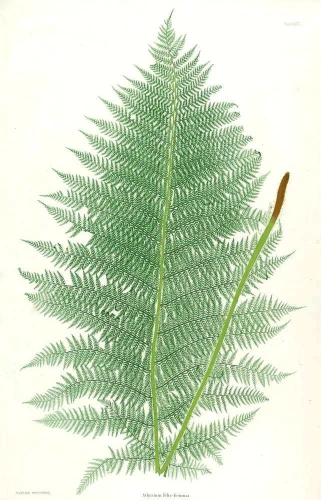
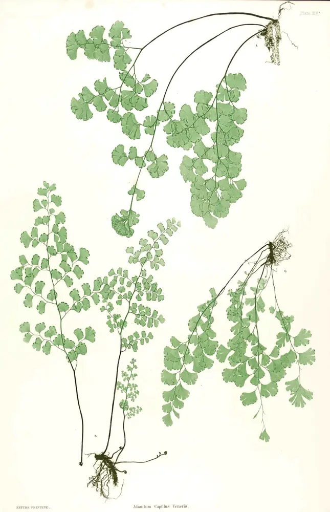
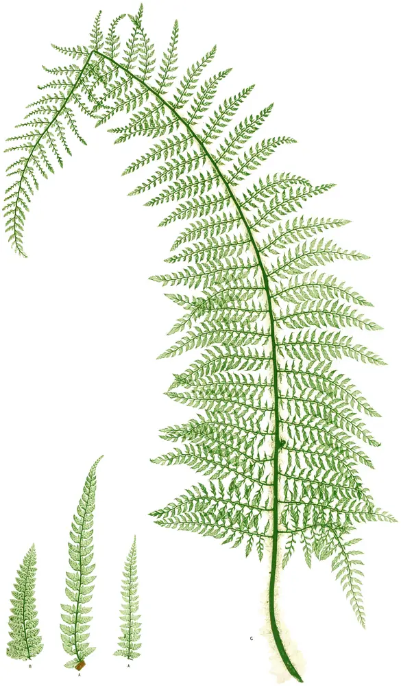

Cancer Evidence Explorer
Which exposures can cause which cancers, and how sure the evidence is for each link. From the IARC Monographs.
- exposures
- 185
- cancer types
- 68
- links
- 469
- languages
- 10

Free tools built from the IARC Monographs and published reviews by Wenxin Wan, a cancer epidemiologist.
They describe whole populations, not what caused any one person’s illness.
Tobacco smoking and processed meat are both in Group 1: the evidence that each can cause cancer is equally sure. The risks are not.

Two tools, free to use, in 10 languages.
Which exposures can cause which cancers, and how sure the evidence is for each link. From the IARC Monographs.
Risk factors for heart disease, stroke, type 2 diabetes, dementia and more, graded by how strong the evidence is.

The official recommendations for lowering your own cancer risk, coordinated by IARC (WHO) and its partners.
Fourteen actions for Europe
Seventeen for Latin America and the Caribbean
Learning by playing — three games.